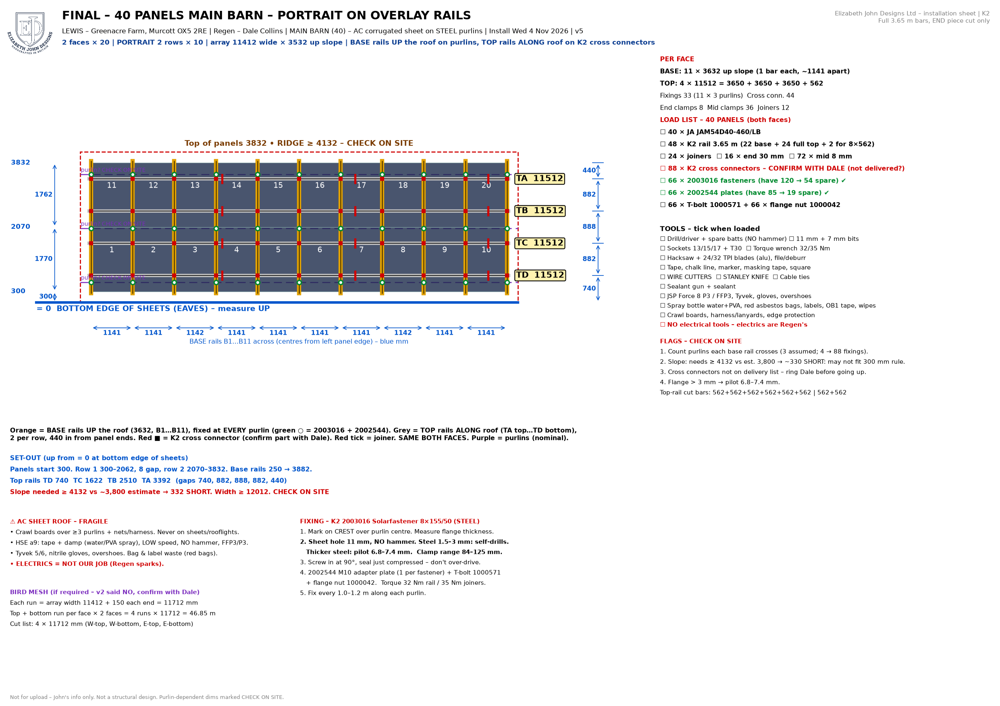
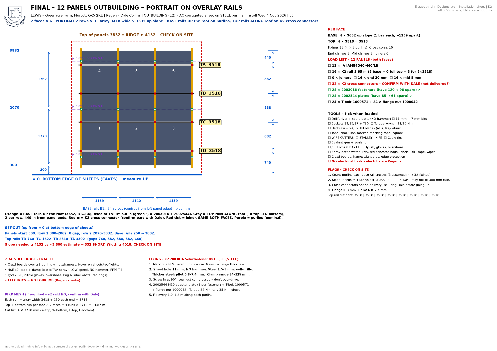
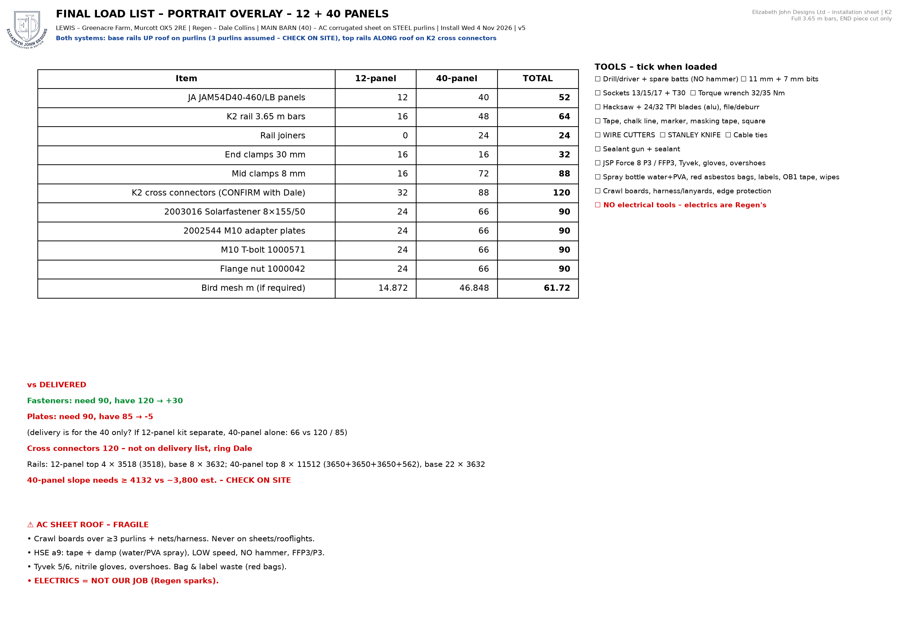

Lewis – Greenacre Farm, Murcott OX5 2RE · 4–6 Nov 2026 · FINAL v5
Overlay rail system – ALL PORTRAIT (40 + 12).
CHECK ON SITE: slope ≥ 4,132 mm (bottom edge of sheets to ridge) & purlins per base rail.
5 adapter plates short and ~120 K2 cross connectors not delivered – Dale contacted.
Bird mesh cut list (if required): 4 × 11,712 mm (40) + 4 × 3,718 mm (12) = 61.72 m. Electrics = Regen's.
← Back to the app Full pack (PDF)


